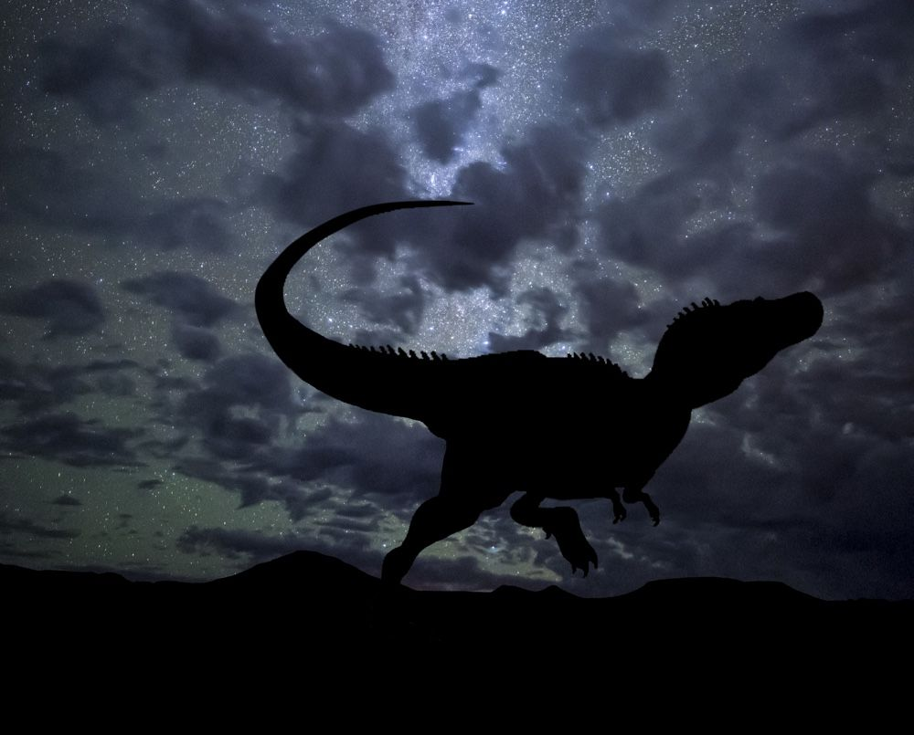
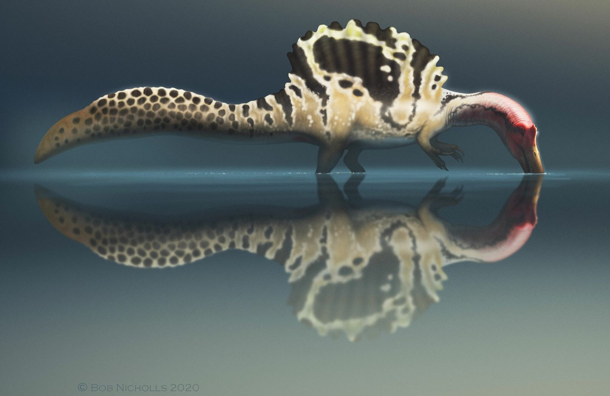

Hoy el inicio es de dinos y la queso! .... ok ya, vi las imagenes y me dieron ganas de hacerlo asi sakjdaskjjd. Cada dia con menos cordura, pero asi me amas...espero askjdasd
 ¡¿RAaaaaWWR?! ¡Rawr raawwwwwr!Dato curioso, el spino es de mis dinos favoritos. Y otro dato mas, es el dino que ha tenido mas "actualizaciones" en los ultimos años, cada dia se descubre nuevas cosas o se hacen nuevas teorias de este dino. La ultima que escuche es que la cresta le servia para flotar (no me preguntes como llegaron a eso, yo no les vendo la maria) pero bueno, me encantan por que son tanto hermosos como letales
 Rawr Raaawr